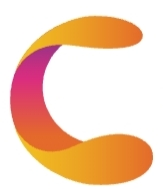

COSOR.io
Products and Services
- 🎬media
Watch what we have posted in bilibili
- 📱COSOR apps
Official access channel for COSOR apps
- 💻dev platform
If you are an application developer, you can share user resources with the C point by connecting your application to the C point public platform
Operation and maintenance
- 📰User support
Get operational information, application updates and questions
- 👥community
Give feedback, ask for help, share experience or chat casually